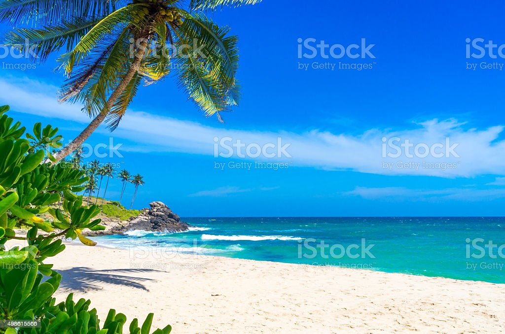
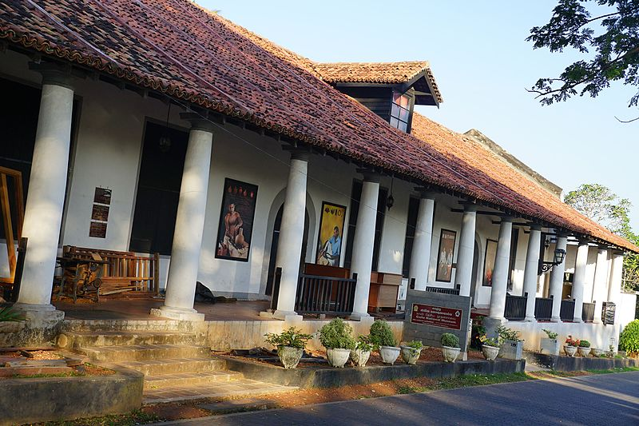
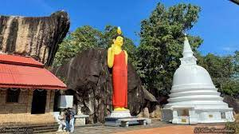
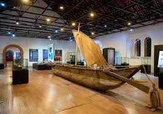
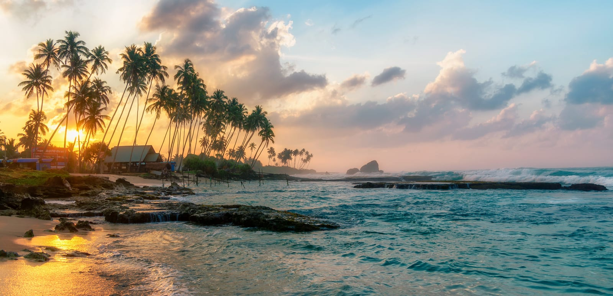
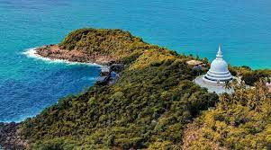
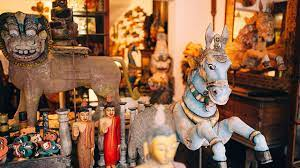
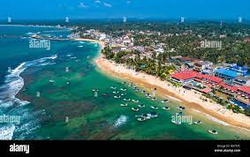
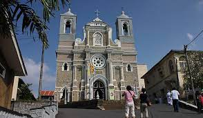
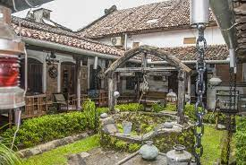

| Best Beaches | Ancient place | Museum |
|---|---|---|
| Unawatuna Beach  |
galle fort |
The National Museum of Galle  |
Akurala Beach  |
Yatagala Raja Maha Viharaya  |
Maritime Museum  |
| Koggala Beach  |
rumassala mountain  |
Sithuvili Gallery  |
| Hikkaduwa Beach  |
St. Mary's Cathedral, Galle  |
Historical Mansion Museum  |